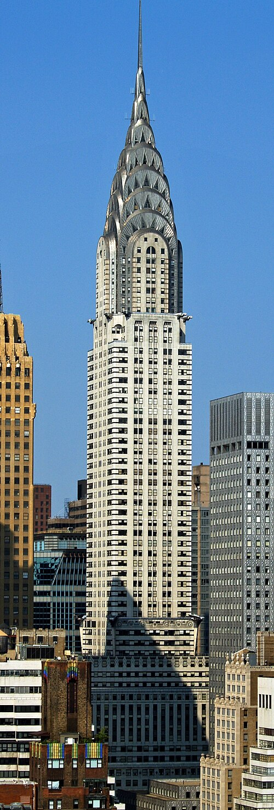
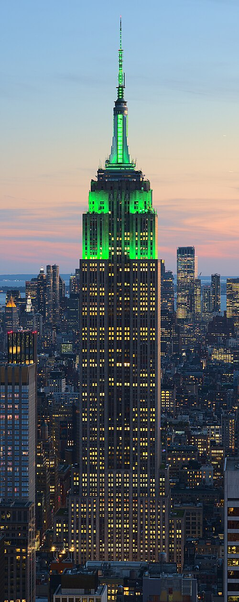
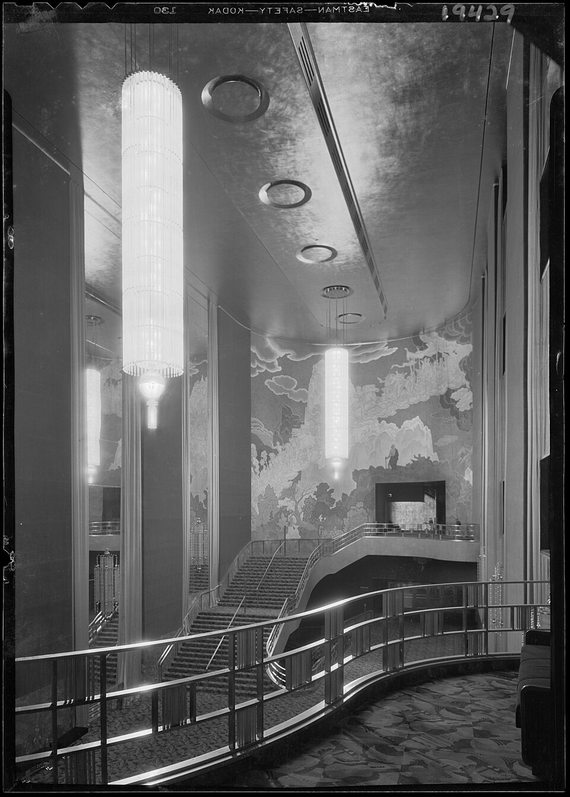
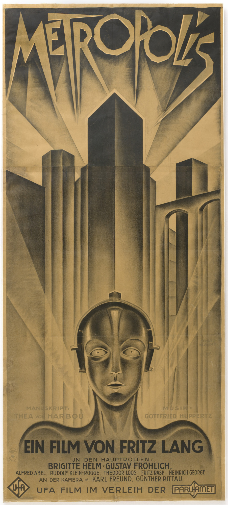
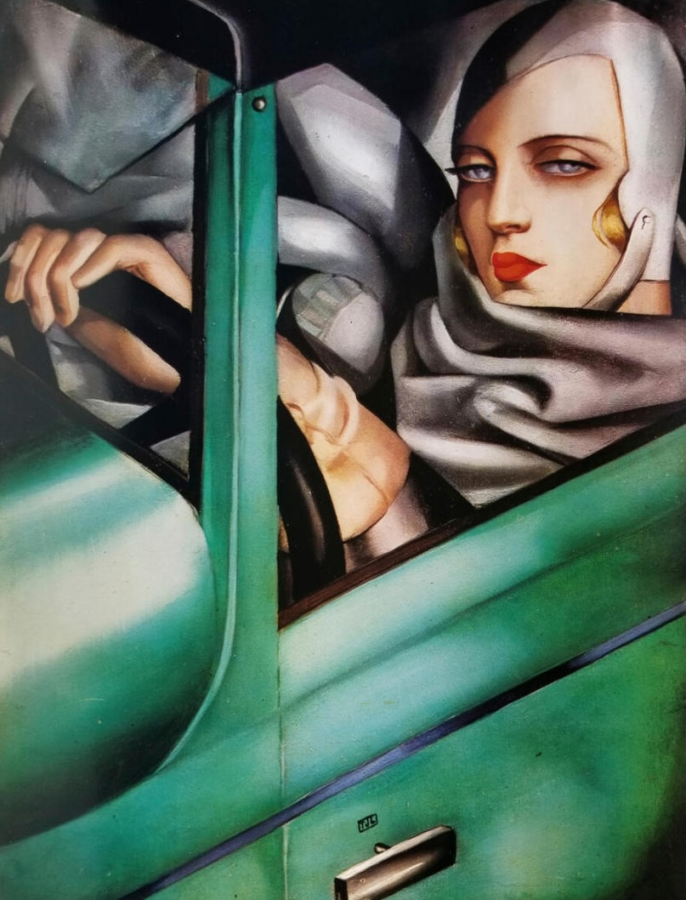
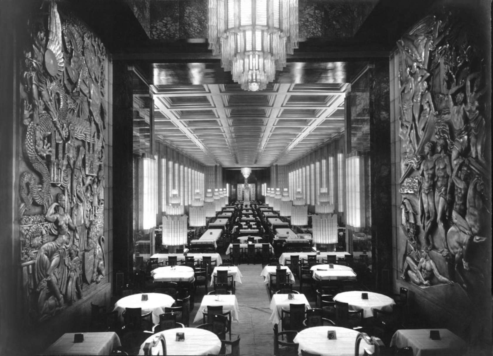
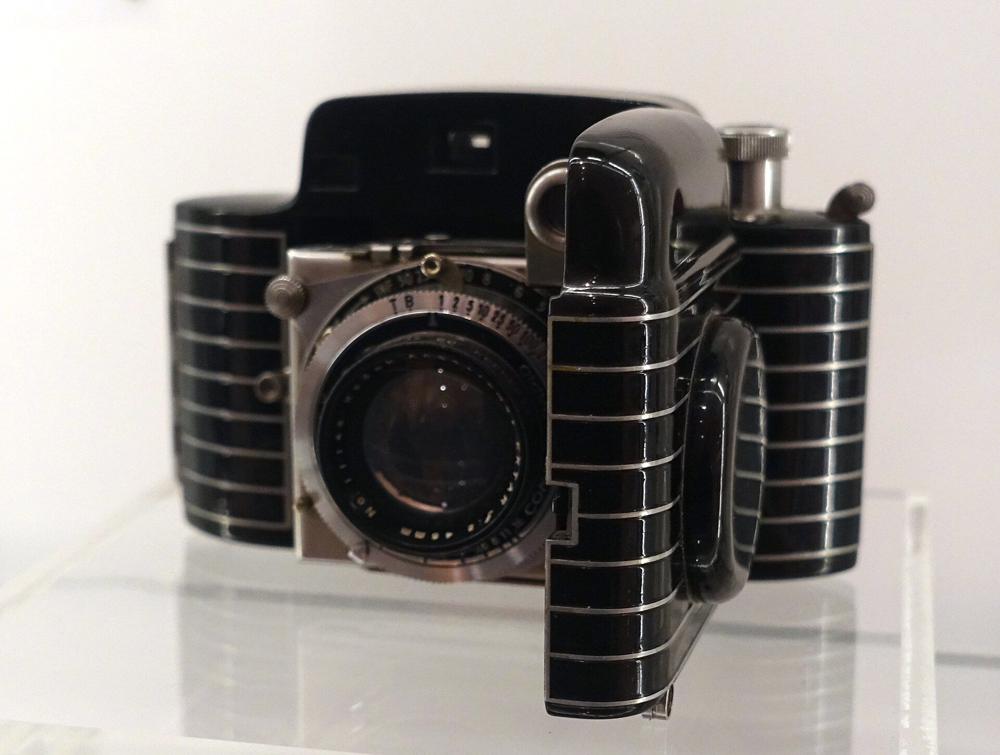

Art Deco Deep Dive
From the Machine Age and 1925 Paris to Streamline Moderne and the Harlem Renaissance, explore the geometric precision, luxury, and cultural energy of the Art Deco era.
Historical Context

Chrysler Building, New York. William Van Alen, 1928–1930. Stainless steel sunburst crown, eagle gargoyles modeled on Chrysler radiator caps, African marble lobby. Often called the most beautiful skyscraper ever built.
Art Deco emerged in the aftermath of World War I, a style that celebrated modernity, optimism, and the Machine Age. Unlike the organic, nature-inspired curves of Art Nouveau, Deco embraced geometry, symmetry, and glamour. It was the aesthetic of speed, luxury, and the future — born from jazz clubs and skyscrapers, yet also from industrial efficiency and streamlined design.
The 1925 Exposition Internationale des Arts Décoratifs et Industriels Modernes in Paris was the movement's defining moment. The term "Art Deco" itself comes from this expo, which introduced a global audience to a unified, modern design language.
Key Ideas
Click each card to reveal an example
The Chrysler Building's crown — stainless steel arches radiating outward in perfect symmetry, with triangular windows creating a sunburst pattern visible across the Manhattan skyline.
Émile-Jacques Ruhlmann's furniture — desks in Macassar ebony with ivory-tipped legs and amboyna burl cabinets. Each piece cost more than a Parisian apartment.
René Lalique's molded glass — combining luxury aesthetics with industrial production methods. His Bacchantes vase was produced in limited editions from a single mold, bridging craft and factory.
Raymond Loewy's locomotive designs — shrouding steam engines in smooth, aerodynamic shells that expressed speed even when standing still. The S1 for the Pennsylvania Railroad became an icon of Streamline Moderne.
Cartier's "Tutti Frutti" jewelry — carved rubies, emeralds, and sapphires from India set in geometric platinum mounts with diamonds. Explosive color contrast against white metal and stone.
Jean Dunand's lacquer panels aboard the SS Normandie — gold, silver, and crushed eggshell inlaid on black lacquer, a technique adapted from East Asian traditions and scaled to monumental proportions.
The Empire State Building — limestone and granite setbacks stepping inward as it rises, shaped by New York's 1916 Zoning Resolution. The "wedding cake" profile became the defining silhouette of the Deco skyline.
Aaron Douglas's Aspects of Negro Life murals — geometric silhouettes, concentric arcs of light, and a muted palette tracing the African American journey from Africa through slavery to Harlem. Art Deco geometry fused with cultural identity.
Why do you think a style born from post-war optimism about technology would have been so appealing during the Great Depression? Did the style's message change?
Iconic Works
Art Deco's reach extended from towering skyscrapers to intimate jewelry. Below are six defining works that show the style's range: monumental architecture, graphic design, fine art, and decorative objects.






Key Figures
Art Deco was a global movement defined by visionary individuals. From furniture designers to architects, from glass artists to graphic designers, these creators shaped the aesthetic and philosophy of an age.
Defined luxury Deco furniture with refined proportions and exotic materials (macassar ebony, shagreen, ivory). His Hôtel du Collectionneur pavilion at the 1925 Exposition was a triumph of restrained elegance. Worked with the finest artisans.
Pioneer of molded opalescent glass. Created iconic perfume bottles, vases, and architectural glass panels. Used industrial molding techniques to achieve luxurious aesthetic. His work blended Art Nouveau organic sensibility with Deco geometry and mass production.
Defined Deco portraiture and figure painting with sleek, geometric style. Celebrated modernity, luxury, eroticism, and speed in oil paintings and murals. Her work epitomized Deco's fascination with glamour and the human form rendered as smooth, polished surfaces.
Designed the Chrysler Building, a pinnacle of Deco architecture. Pioneered setback massing and ornamental crown design in skyscrapers. His work synthesized Art Deco decoration with modernist structural logic and urban verticality.
Master of theatrical Deco. Designed costumes and sets for Ziegfeld Follies, Ballets Russes, and opera. His elongated figures and intricate geometric patterns brought Art Deco's luxury aesthetic to the stage. Prolific in fashion illustration.
Leading figure of the Harlem Renaissance, Douglas synthesized African art and Art Deco in his bold graphic paintings and book illustrations. Used geometric abstraction, silhouettes, and angular forms to depict African-American experience with modernist visual language.
Pioneer of streamline design and industrial aesthetics. Designed locomotives, refrigerators, cars, and consumer goods using Deco and Streamline Moderne principles. Believed "beauty sells" and brought Art Deco sensibility to mass manufacturing.
Master of Deco poster design. Used bold geometry, speed lines, and limited color to advertise trains, ships, and products. His work bridged commercial advertising and fine art, defining visual language of transportation and modern leisure.
Global Variations
Art Deco was a truly global phenomenon. While it emanated from the 1925 Paris Exposition, it was adapted and reinterpreted by architects, designers, and artists worldwide — from Manhattan's skyscrapers to Bombay's Art Deco apartment buildings, Shanghai's hotels, and even remote Napier, New Zealand.
Home to the 1925 Exposition Internationale. Ruhlmann's luxurious furniture, Lalique's glass, Cassandre's posters, and Parisian art deco cafés and theaters defined the style's elegance and refinement.
Chrysler Building, Empire State Building, Rockefeller Center, Radio City Music Hall. American Deco embraced verticality, setbacks, and ornamental crowns on towers. Art Deco became synonymous with modernity and American optimism.
Developed as a resort destination in the 1920s–30s with pastel-colored Deco hotels (Betsy Hotel, Edison Hotel). Adapted European Deco to tropical climate with stucco, chrome, neon, and pastels — creating a distinctive American variant.
Marine Drive's curved Art Deco apartment buildings (c. 1932–50s) epitomize Indo-Deco. Synthesized Art Deco with local materials and climate. Museums, cinemas, and residential buildings showcase a distinctive Indian interpretation.
International concessions hosted luxury Deco hotels (Cathay Hotel, c. 1929; Peace Hotel). Represented Shanghai's cosmopolitan aspirations and link to global modernism during the Republican era.
Devastated by earthquake in 1931, Napier was rebuilt (1931–33) entirely in Deco and Streamline Moderne. One of the world's most coherent Art Deco towns, largely preserved today as a living archive of the era.
Art Deco adapted to each region while maintaining core principles (geometry, luxury, modernity). How do geographic, climatic, and cultural factors shape the interpretation of a global style?
Match the Artist to Their Work
Click an artist on the left, then click their work on the right. Correct matches will lock in place.
Match the City to Its Landmark
Click a city on the left, then its landmark on the right.